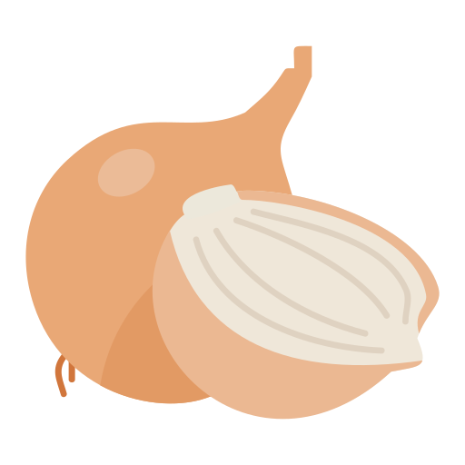
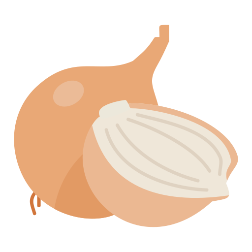

SWITZERLAND
- Switzerland is a landlocked country situated in Central Europe. It is bordered by France to the west, Germany to the north, Austria and Liechtenstein to the east, and Italy to the south.
- Switzerland's history is marked by a long tradition of neutrality and independence. The Swiss Confederation began to take shape in the late 13th century, when three cantons—Uri, Schwyz, and Unterwalden—formed an alliance for mutual defense against external threats. This pact laid the foundation for the modern Swiss state. Over the centuries, additional cantons joined the confederation, and Switzerland emerged as a significant player in European politics. The country maintained its neutrality during both World Wars, further solidifying its reputation as a peaceful nation. In 1848, Switzerland adopted a federal constitution, establishing it as a federal state with a unique system of direct democracy that allows citizens to have a significant say in governance. Today, Switzerland is known for its high standard of living, strong economy, and role as a center for international diplomacy.
- The number one tourist attraction in Switzerland is the Matterhorn, one of the most iconic peaks in the Swiss Alps. Located near the town of Zermatt, the Matterhorn is renowned for its distinctive pyramid shape and stunning beauty, drawing thousands of visitors each year. It offers various activities for tourists, including skiing, hiking, and mountaineering. The surrounding area also features charming alpine villages, breathtaking scenery, and opportunities to experience Swiss culture.
- A fun fact about Switzerland is that it has four official languages: German, French, Italian, and Romansh. This linguistic diversity reflects the country's multicultural heritage and regional differences.
Location
History
Tourist Attraction
Fun Fact

Switzerlands Flavours
Switzerland's cultural food history reflects its diverse geography and blend of German, French, and Italian influences, shaped by its position at the crossroads of Europe. Swiss cuisine is known for its use of local ingredients like dairy, potatoes, and bread, with cheese playing a central role, especially in iconic dishes like fondue and raclette. The country's alpine culture also emphasizes hearty meals, including dishes like rosti (fried grated potatoes) and Zürcher Geschnetzeltes (sliced veal in cream sauce). Switzerland’s history of regional diversity, combined with influences from neighbouring countries, has created a rich culinary tradition that balances simplicity with robust flavours.
The Must Try Dish I Discovered iN Switzerland
RÓSITI
Rösti is a simple, buttery and fragrant national dish of Switzerland, a crispy crusted potato pancake with an appetizing golden colour. It is a great side dish to traditional Swiss delicacies such as leberspiesschen (grilled calves' livers wrapped in bacon and sage) or émincé de veau. The potatoes for rösti are boiled, peeled, chilled, grated into long strips, and fried with butter, oil, salt, and maybe a bit of beef fat. The dish is then cut into wedges and served to hungry consumers. Additionally, herbs, onions, lamb, or grated cheese can be added to the dish to enhance its flavours.


 
